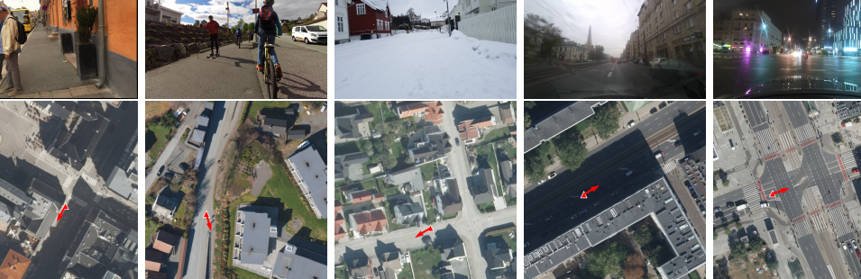

Open
Ground imagery comes from ZOD and Mapillary, paired with aerial imagery from national mapping agencies with open access.
ECCV 2026
1 École Polytechnique Fédérale de Lausanne (EPFL), Switzerland 2 Southern University of Science and Technology (SUSTech), China 3 Delft University of Technology, The Netherlands 4 Zenseact
Why OpenCVL
Ground imagery comes from ZOD and Mapillary, paired with aerial imagery from national mapping agencies with open access.
The dataset combines calibrated vehicle-mounted sensors with in-the-wild images from pedestrians, cyclists, cars, and other capture platforms.
OpenCVL covers four countries, 41 cities, more than 7,000 km2, and 617,388 ground-aerial image pairs.

Coverage
OpenCVL spans Sweden, the Netherlands, Poland, and Norway. Each ground-level image is paired with a 100 m by 100 m aerial crop from national open mapping sources.
Data composition
Vehicle-mounted front-facing cameras, LiDAR, and high-end GNSS provide accurate pose supervision for training and curated evaluation.
274,487 imagesCrowd-sourced street-level imagery adds broad variation in camera type, mounting, viewpoint, time, weather, and scene content.
342,901 imagesAerial crops are retrieved from national mapping agencies for Sweden, the Netherlands, Poland, and Norway.
0.04-0.16 m/pixel
Evaluation protocol
Training split
Combines ZOD and Mapillary ground imagery to scale supervised learning with both accurate pose supervision and broad viewpoint diversity.
Access
Citation
@inproceedings{opencvl2026,
title = {OpenCVL: An Open, Diverse, and Large-Scale Dataset for Fine-Grained Cross-View Localization},
author = {Xia, Zimin and Zaffar, Mubariz and Fu, Junsheng and Alahi, Alexandre and Kooij, Julian F. P.},
booktitle = {European Conference on Computer Vision},
year = {2026}
}